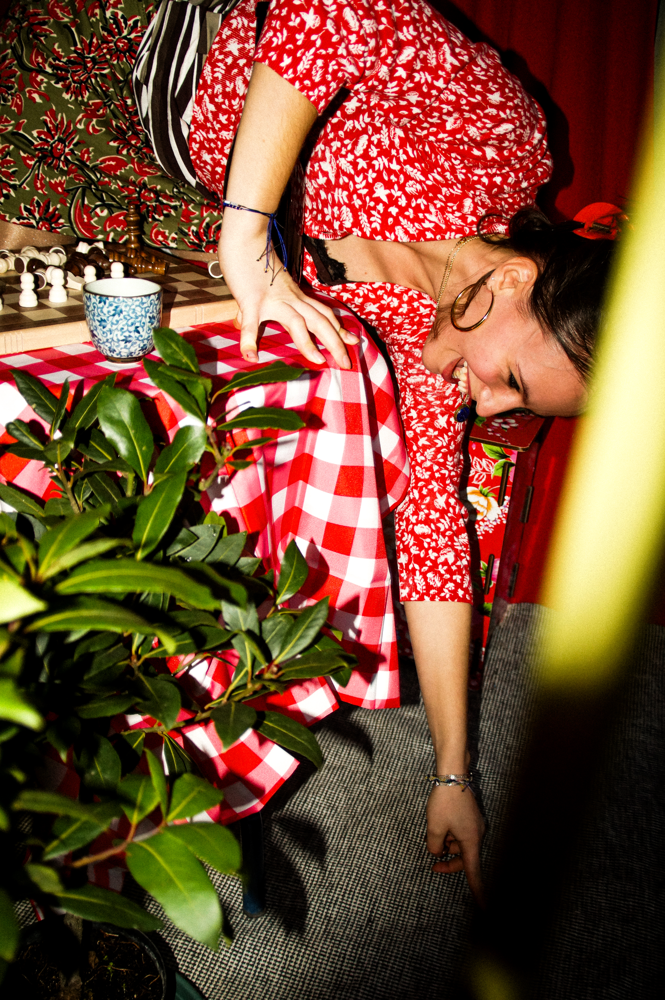
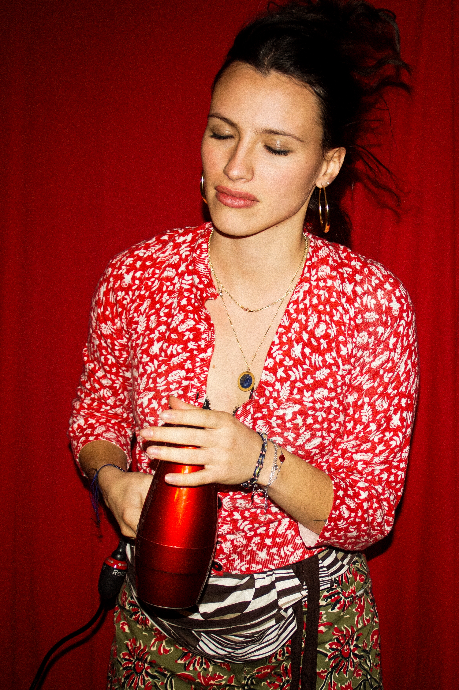
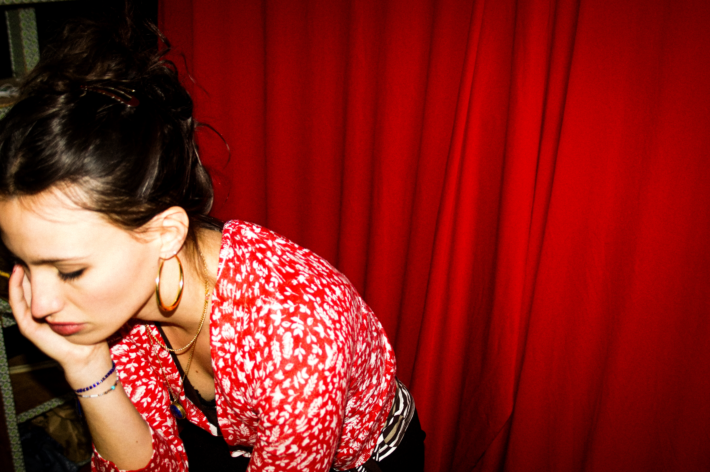
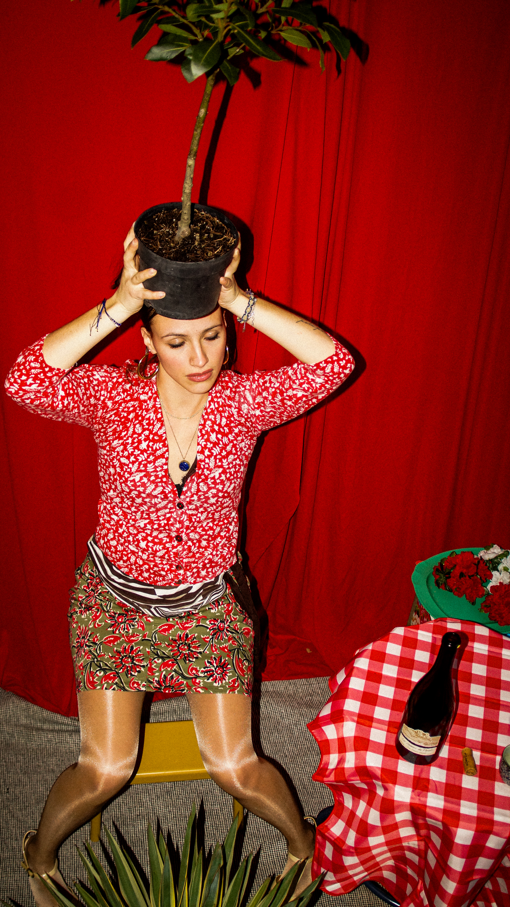
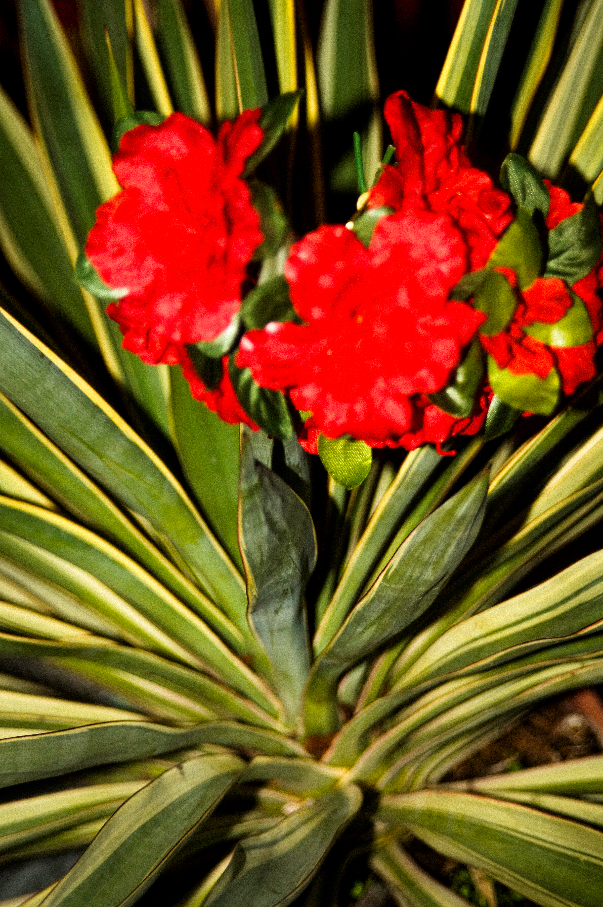
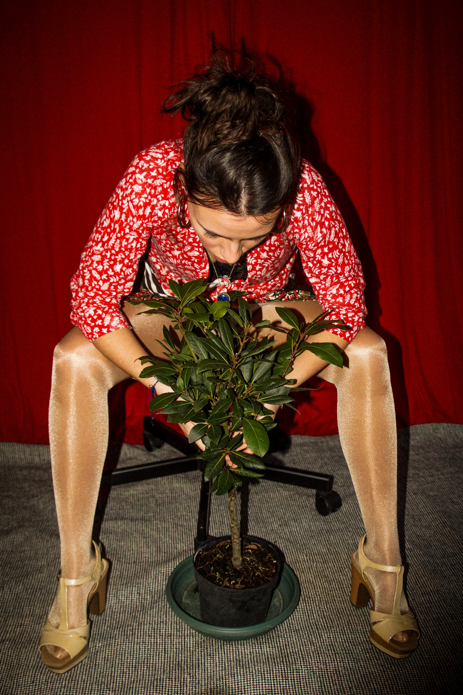
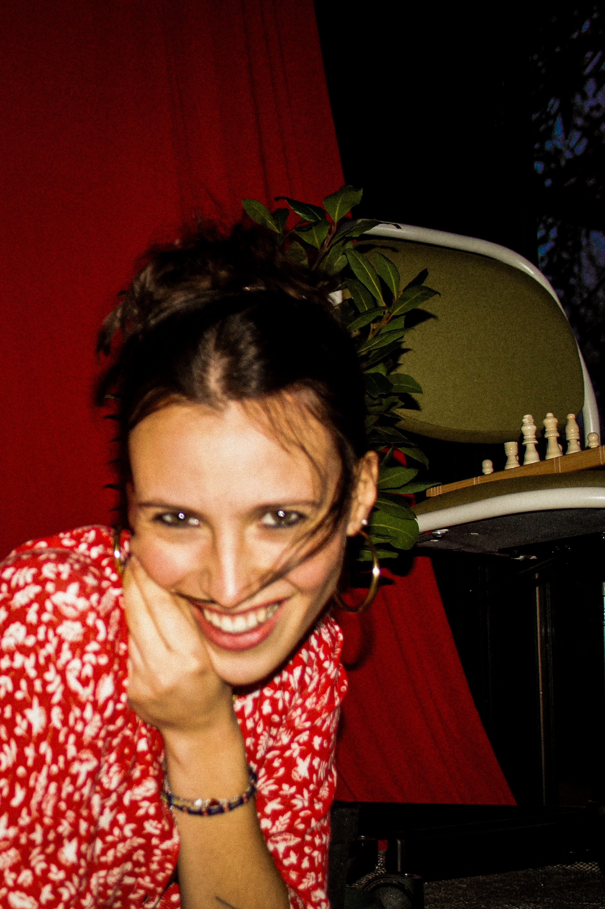
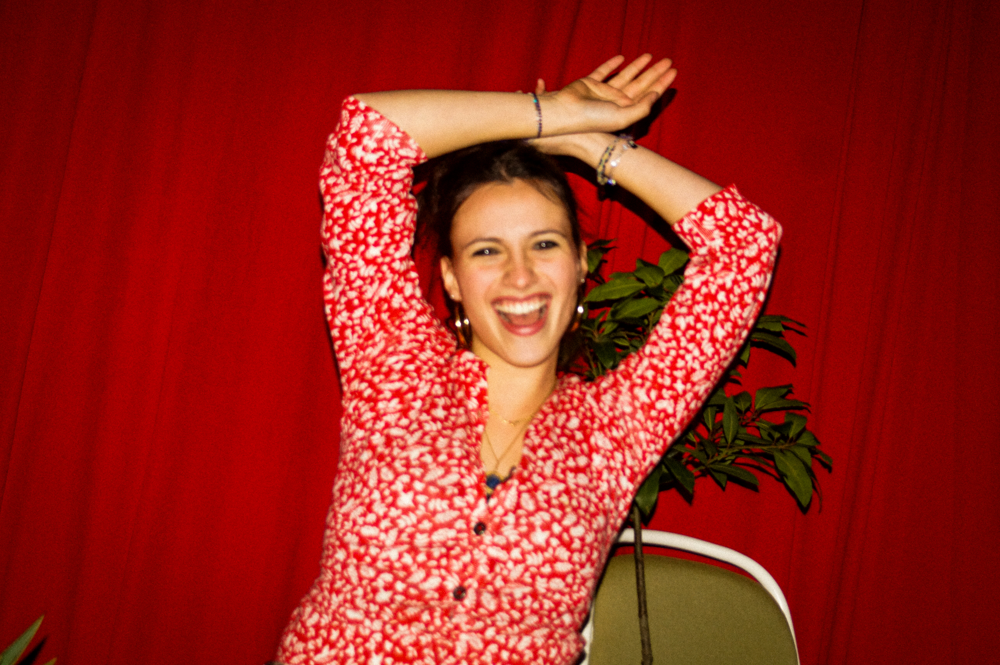
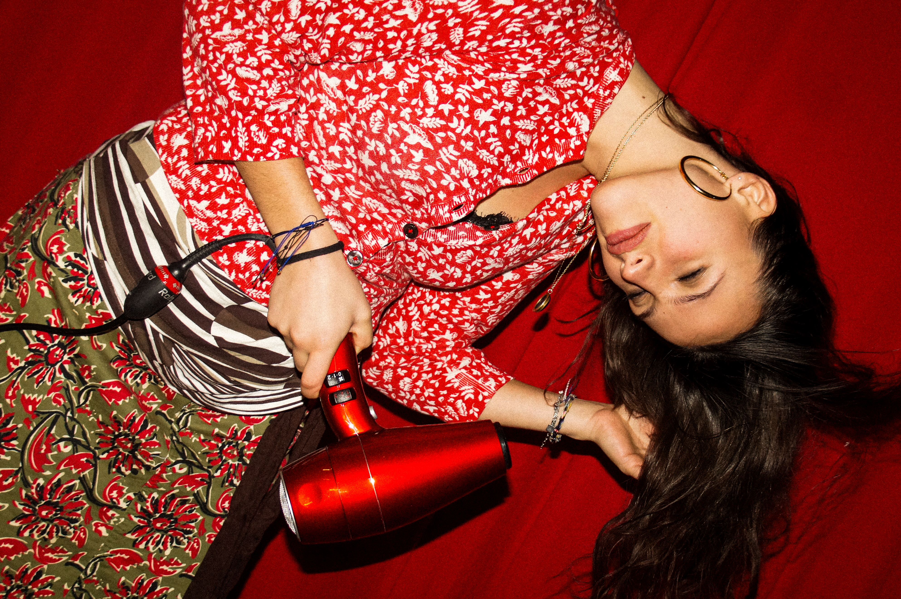

Yo quiero ser una chica Almodóvar
Discipline
Direction artistique, Photographie, Retouches, Set design, Stylisme
Année
2025
Contexte
Série photo inspirée de l’univers Almodóvar, de son utilisation de la couleur, du motif et de la façon dont il dépeint ses personnages féminins.
Crédits
Modèle: Aurore Clauzel








